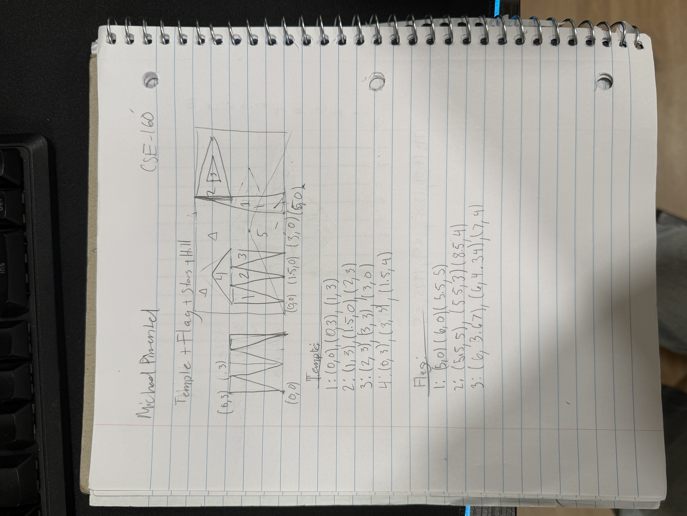

Clicking Make Your Own Brush opens a second WebGL canvas where you can design your own brush stamp. Use the same shape, color, and size controls to place points, triangles, or circles anywhere on the brush canvas. Once you're happy with the design, press Use as Brush — your custom shape is then used as the brush on the main canvas. Every stamp preserves the colors you designed with, and the size slider scales the entire brush stamp up or down. You can clear and redesign the brush at any time without losing your painting.
XXX
Original Design Sketch:
